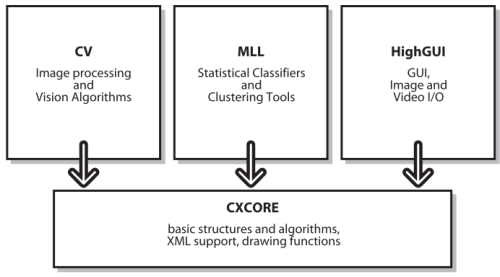

OpenCV-图像处理和计算机视觉
OpenCV是Intel公司开发的开源计算机视觉库。它用C语言高速地实现了许多图像处理和计算机视觉方面的通用算法，并且通过SWIG提供了Python的调用接口。本章介绍用Python调用OpenCV库，实现一些简单的图像处理和计算机视觉算法。
OpenCV提供的Python调用接口和C语言的API基本上是一致的，这个接口对于动态语言Python来说有些累赘。不过由于Python程序和C语言程序差别不大，用Python调用OpenCV，能够帮助我们测试API函数和快速实现算法。
读写图像和视频文件
让我们从显示一幅图像开始进入OpenCV：
# -*- coding: utf-8 -*-
from opencv.highgui import *
import sys
img = cvLoadImage( sys.argv[1] )
cvNamedWindow("Example1", CV_WINDOW_AUTOSIZE)
cvShowImage("Example1", img)
cvWaitKey(0)
OpenCV的库可以分为5个主要组成部分，下图显示了其中的4个：

OpenCV的5个主要组成部分
- CV : 包括了基本的图像处理和高级的计算机视觉算法，在Python中，opencv.cv模块与之对应
- ML : 机器学习库，包括许多统计分类器，opencv.ml模块与之对应
- HighGUI : 提供各种图像、视频、数据的输入输出和简单的GUI开发，opencv.highgui模块与之对应
- CXCore : 上述三个库都是以CXCore提供的基本数据结构和函数为基础，主模块opencv与之对应
- CvAux : 包括一些实验性的算法
显示图像的例子中，只用到数据输入和界面显示两个功能，他们都在highgui库中，因此需要从库中载入这些函数，由于opencv的所有API函数都以cv开头，因此不怕他们和别的库命名冲突：
from opencv.highgui import *
下面调用cvLoadImage从文件中读入图片信息，其返回的是一个opencv.cv.cvMat对象，cvMat是OpenCV中描述矩阵(或者说多维数组)的数据结构，许多图像处理操作都是针对cvMat对象进行的：
img = cvLoadImage( sys.argv[1] )
下面调用cvNamedWindow函数创建一个窗口，其名字为"Example1"，大小设置为CV_WINDOW_AUTOSIZE，表示它随着其内容自动改变大小：
cvNamedWindow("Example1", CV_WINDOW_AUTOSIZE)
然后调用cvShowImage函数，将img表示的图像显示在"Example1"窗口。由于OpenCV库大部分代码都是使用C语言编写的，因此它采用“对象.方法()”的方式，而是使用函数的方式。而且highgui提供的仅是简便的GUI功能，因此这里直接用字符串"Example1"表示要显示图片的窗口，而不是用某个表示窗口的对象。
最后调用cvWaitKey，等待用户按键输入，如果其参数为正值，那么等待指定的毫秒数后继续运行；如果其值为0，表示永久等待：
cvWaitKey(0)
如果在IPython中运行上面程序之后，IPython等待用户按键输入，按任意键之后，IPython进入可输入命令的状态，并且显示图片的窗口并没有关闭，这样就可以在IPython中直接输入opencv的函数调用，查看其结果。下面的先从opencv.cv载入所有图像处理相关的函数，
>>> from opencv.cv import *
然后调用cvSmooth函数对img进行高斯模糊，cvSmooth函数的第一个参数指定原始图像，第二个参数指定输出图像，这里都用img，因此高斯模糊的结果覆盖原始图像，第三个参数指定采用高斯模糊算法，第四个参数是高斯模糊的参数：以像素点为单位的模糊范围：
>>> cvSmooth(img, img, CV_GAUSSIAN, 11)
最后调用cvShowImage更新窗口中的图片：
>>> cvShowImage("Example1", img)
下面是图像处理的结果，左图为原始图像，右图为模糊后的图像：
调用cvSmooth对图像进行高斯模糊处理